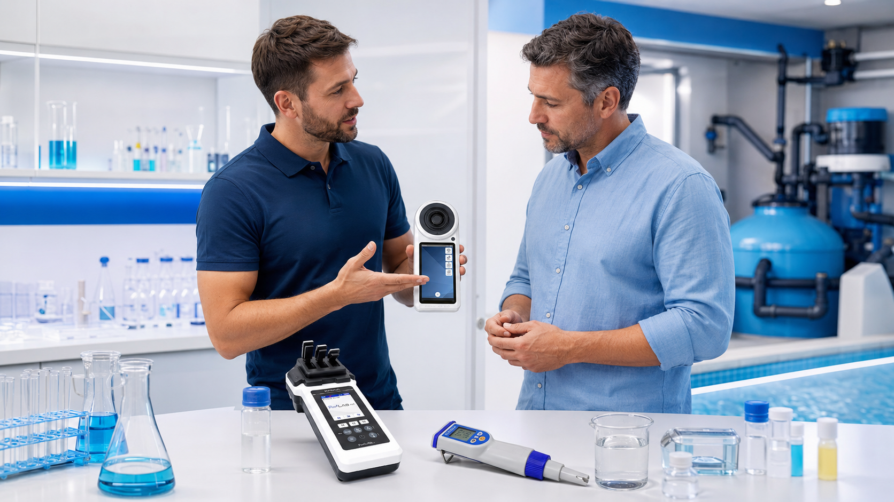
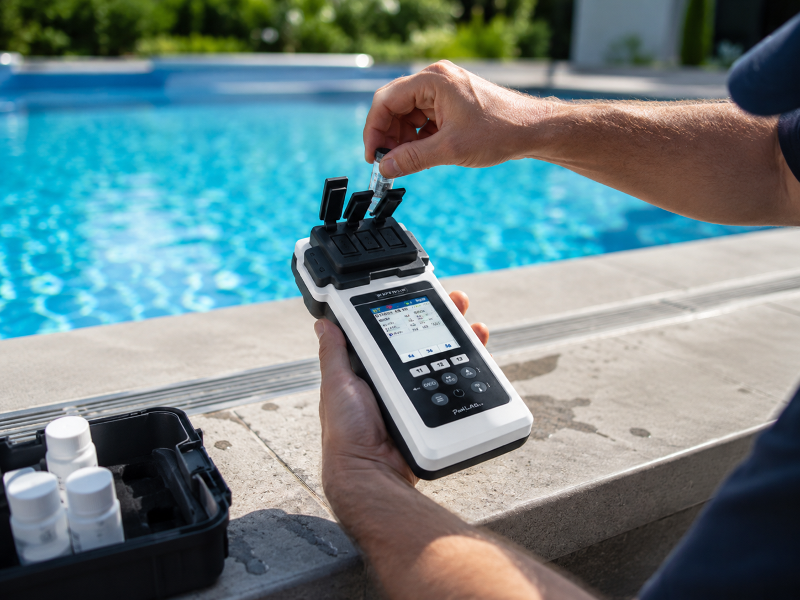
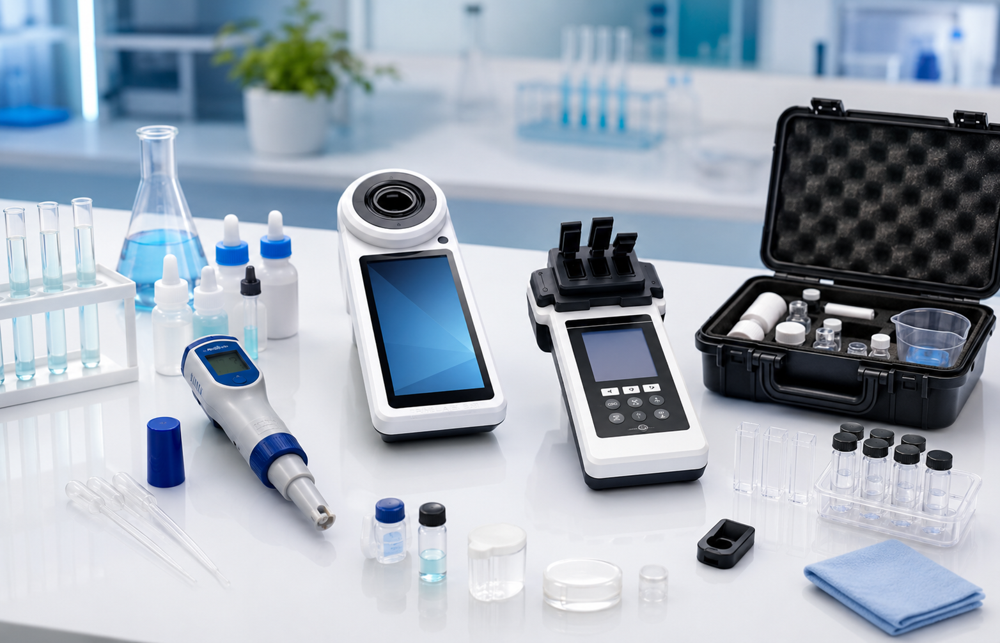

Medir bien para actuar bien.
Esperar puede costar más que actuar. Una medición confiable permite detectar desviaciones, responder a tiempo y sostener decisiones basadas en información creíble.
- Equipos seleccionados para aplicaciones reales.
- Acompañamiento para elegir, usar y mantener cada solución.
- Reactivos, repuestos y consumibles disponibles.

Una lectura aislada es un dato. Una medición confiable es una herramienta de decisión.
Controlar el agua nunca fue tan fácil y económico. El valor aparece cuando el resultado es suficientemente confiable para comparar, detectar tendencias y actuar antes de que una desviación afecte el proceso, el usuario, la operación y el bolsillo.
Detecta
Identifica cambios de manera oportuna mediante mediciones consistentes.
Decide
Sustenta acciones operativas con datos y no únicamente con percepción.

Todo lo que necesitas para medir, mantener y responder
Encuentra la solución adecuada y haremos llega rápidamente al producto o el soporte que necesitas.

¿No sabes qué equipo necesitas?
Cuéntanos que necesitas controlar, dónde realizas la medición y con qué frecuencia. Te ayudamos a estructurar una solución práctica.